SegNet
http://mi.eng.cam.ac.uk/projects/segnet/
时间：2015 年
Max Pooling 后特征图会变小，空间分辨率的下降对于边界的勾画是不利的，在文章的论述中，作者认为需要对这种边界信息进行存储保留，比如作者将每一个 feature map 中每一个 pooling 窗口中最大值的 location 记录了下来。
SegNet 在上采样过程中使用了在 encoder 端所获得的 pooling indices，用这个来指导上采样过程。
并不推荐在医学图像这样精度要求非常严格的领域内使用 SegNet，相对于 pooling indices，直接传送 feature map 的信息量还是高很多。
1 Introduction
最大池化和子采样降低了特征图的分辨率。
在提取的图像表示中保留边界信息很重要。
SegNet 的关键组成部分是 decoder 网络，它由一个层次的 encoder 器组成，每个 decoder 对应一个 encoder。
其中，decoder 使用从相应 encoder 接收到的最大池化索引（max-pooling indices）对其输入的特征图进行非线性上采样。
max-pooling indices 的优势：
（1）改善了边界划分
（2）减少了实现端到端训练的参数数量
（3）只需稍加修改，就可以加入到任何的 encoder-decoder 网络中
2 Literature Review
encoder 网络权重通常是在大型 ImageNet 对象分类数据集上进行预训练。
FCN 中的 decoder 对其输入特征图进行上采样，并与相应的 encoder 特征图相结合，以产生下一个解码器的输入。它的 encoder 网络（134M）有大量的可训练参数，但 decoder 网络非常小（0.5M）。
FCN8s 的 decoder 就不那么小了！decoder 也是进行 4 次 deconv，也 encoder 相对应。
忽略高分辨率的特征图肯定会导致边缘信息的丢失。
多尺度的深层结构，结合不同层的特征图，能够提供全局和局部的上下文信息，使用特征图的早期编码层保留了更多的高频细节，可以帮助获取更清晰的类边界。推理的成本也很高，有多条卷积路径进行特征提取。
SegNet 则使用解码器来获取特征，以实现精确的像素化分类。
最近提出的解卷积网络及其半监督变体解耦网络利用编码器特征图的最大位置（pooling indices）在解码器网络中进行非线性上采样。
SegNet 抛弃了 VGG16 编码器网络的完全连接层，这使得网络在相关的训练集上使用 SGD 优化来训练。
对于每个样本，在池化过程中计算出的最大位置的索引被存储并传递给解码器。解码器通过使用存储的池化索引对特征图进行上采样。
3 Architecture
SegNet 有一个编码器网络和一个相应的解码器网络，然后是最后的像素分类层。
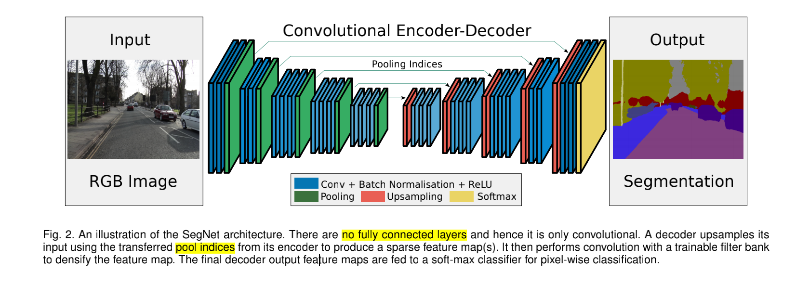
（1）encoder network（2）decoder network（3）pixel-wise classification layer
去掉全连接的 VGG16 有 13 个卷积层。可以用在大数据集预训练好的参数进行初始化。VGG16 的参数量是 134M，去掉全连接层后的参数量为 14.7M。
每个编码器层都有相应的解码层，因此解码网络也有 13 层。最后的解码器的输出被送入 multi-class soft-max classififier 为每个像素独立产生类概率。
FCN 也没有全连接层，为什么 SegNet 和 FCN 的模型大小差那么多？
TODO：使用 summary 比较一下两者的参数！
编码器网络中的每个 encoder 都与一组卷积核进行卷积后，产生一组特征图，然后是 BN、ReLU。
之后，进行最大池化（2×2，stride=2，非重叠），并将所得输出以 2 的系数进行子采样。
以 2 的系数进行子采样怎么理解？
最大池化用于实现输入图像中的小空间位移的平移不变性。子采样的结果是为特征图中的每个像素提供一个大的输入图像上下文（spatial window）。
Max-pooling is used to achieve translation invariance over small spatial shifts in the input image. Sub-sampling results in a large input image context (spatial window) for each pixel in the feature map.
怎么理解子采样？最大池化难道不就是子采样中的一种吗？
虽然几层最大池化和子采样可以实现更多的平移不变性（translation invariance），以实现鲁棒分类，但相应地也存在特征图的空间分辨率的损失。
While several layers of max-pooling and sub-sampling can achieve more translation invariance for robust classification correspondingly there is a loss of spatial resolution of the feature maps.
论文所要解决的问题：
随着最大池化和子采样层的堆叠，越来越大的有损（边界细节丢失）特征图对边界划分至关重要的分割任务来说不利。
因此，在进行子采样之前，有必要在编码器特征图中捕获并存储边界信息。如果推理过程中的内存不受限制，那么可以存储所有的编码器特征图（子采样后）。
存储所有的特征图，这不就是 UNet 吗？
Unet 有一个 copy and crop！
由于内存的限制，本文提出了一种更有效的方式来存储这些信息。 它涉及到只存储最大池化索引（max-pooling indices），即为每个编码器特征图记忆每个池化窗口中最大特征值的位置。
每个 2×2 的池化窗口可以使用 2 个比特来完成，与记忆浮点精度的特征图相比，存储效率更高。
这种较低的内存存储量导致精度略有下降，但仍适合实际应用。
解码器网络中的解码器使用从相应编码器特征图中记忆的最大池化指数对其输入特征图进行上采样。
对于输入的特征图，decoder 使用其相对应的 encoder 存储下来的 max-pooling indices 进行上采样。
The appropriate decoder in the decoder network upsamples its input feature map(s) using the memorized max-pooling indices from the corresponding encoder feature map(s).
上采样后得到稀疏的特征图，然后将这些特征图与可训练的 decoder 卷积核进行卷积，以产生密集的特征图。
卷积之后是 Batch Normalization。
需要注意：对应于第一个 encoder（最接近输入图像）对应的 decoder 会产生一个多通道特征图（最后一个 decoder），尽管其 encoder 输入有 3 个通道（RGB）。
网络中的其他 decoder 产生的特征图与其 encoder 输入的大小和通道数相同。
最后一个 decoder 输出的特征图，输入到 soft-max classifier，最后的输出是一个 K 通道的概率图像，其中 K 是类的数量。 预测分割对应于每个像素处概率最大的类。
将 SegNet 与 DeconvNet（更大的参数量）、UNet 进行比较。
U-Net 并不重复使用 pooling indices，而是将整个特征图（以更多的内存为代价）转移到相应的解码器上，并将其连接成上采样(通过解卷积)解码器特征图。
3.1 Decoder Variant
许多分割网络的架构都是用相同的 encoder， 它们只是在其 decoder 网络的形式上有所不同。
SegNet-Basic：4 encoder，4 decoder。
SegNet-Basic 中的所有 encoder 都会进行最大池化和子采样，相应的 decoder 使用接收到的最大池化索引对其输入进行上采样。
在encoder 和 decoder 网络中，每一个卷积层之后都会使用 BN。
decoder 网络中不使用 ReLU。
图 3 的左边是 SegNet（也是 SegNet-Basic）使用的解码技术，其中上采样步骤不涉及学习。得到的稀疏特征图可以通过可训练的卷积使其密集化。
SegNet-SingleChannelDecoder：卷积核只有一个通道，大大减少了可训练参数的数量和推理时间（分组卷积）。
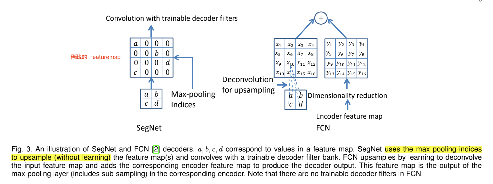
图 3 中右边是 FCN（也是 FCN-Basic）解码技术。FCN 模型的重要设计要素是 decoder 特征图的降维步骤。
✅FCN-Basic（0.65M） 的参数量为什么要少于 SegNet-Basic（1.425M）？
FCN-Basic 是与 SegNet-Basic 对应的 FCN 版本，共享相同的 Encoder 网络，而 Decoder 网络采用 FCN 所提出的结构。
答：FCN-Basic 把 dimensionality reduction 了。看看 FCN-Basic-NoDimReduction，参数量、内存消耗就差不多了。
FCN decoder 在推理过程中需要存储 encoder 特征图。这带来了一定的内存消耗，以 32 位浮点精度存储 FCN-Basic 第一层 180×240 分辨率的 64 个特征图需要 11MB。
SegNet 对 max-pooing indices 的存储成本要求几乎可以忽略不计（如果使用每 2×2 个池化窗口 2 bits 存储，则需要 0.17MB）。
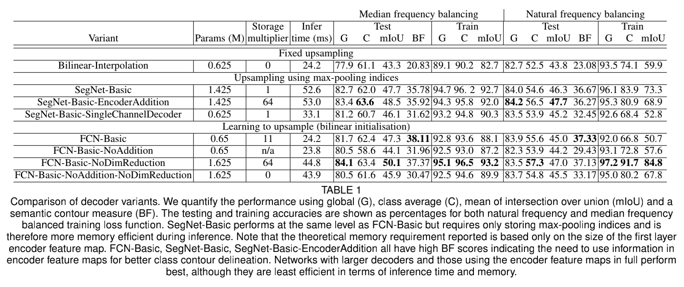
FCN-Basic-NoAddition：一个 FCN-Basic 模型的变体，它摒弃 encoder 特征图添加步骤，只学习上采样核。因此，不需要存储 encoder 的特征图。 TABLE 1 中的 n/a 表示：“表格中本栏目(对我)不适用”。
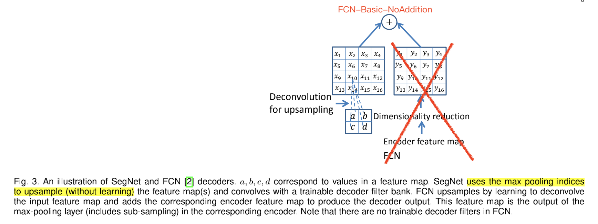
Bilinear-Interpolation：使用固定的双线性插值权重来研究上采样，因此上采样不需要学习。（不太了解这个）
SegNet-BasicEncoderAddition：在每一层将 64 个 encoder 特征图添加到 SegNet decoder 的相应输出特征图中，以创建一个内存消耗更大的 SegNet 变体。（仿照 FCN）
✅Storage 为什么会比 FCN-Basic 大那么多？FCN 存储的是全部的特征图，按理说应该更大的才对！
答：因为 FCN-Basic 进行 dimensionality reduction 了。如果是 FCN-NoDimReduction，Storage 的参数量就上来了，两者是相等的，都是增加了 64 倍。
FCN-Basic-NoDimReduction：一个更耗费内存的 FCN-Basic 变体，对 encoder 特征图不进行维度减少。与 FCN-Basic 不同，最终的 encoder 特征图在传递给 decoder 网络之前，并没有被压缩到 K 个通道。因此，每个 decoder 末端的通道数与对应的 encoder 相同（即 64 个）。
✅什么意思？FCN 的 encoder 使用的 VGG，通道数 3 – 64 – 126 – 256 – 512。意思是在第 4 次卷积是，将通道从 256 压缩到 K ？
答：压缩的最后一个 encoder，即最后一个 encoder 输出的特征图的通道数为 K，K 为类别数。
3.2 Training
类别平衡（class balancing）：当训练集中每个类的像素数量变化较大时（如 CamVid 数据集中道路、天空和建筑像素占主导地位），那么就需要根据真实类的情况对损失进行不同的加权。
-
median frequency balancing
-
natural frequency balancing
3.3 Analysis
3 个性能指标（performance measures）：
（1）Global accuracy (G)：衡量数据集中正确分类像素的百分比。
（2）Class average accuracy (C)：所有类别预测精度的平均值。
（3）mean Intersection over Union (mIoU)：所有类的平均 IoU。mIoU 度量是一个比类平均精度更严格的度量，因为它惩罚假阳性预测（FP）
mIoU：在语义分割中，mIoU 才是标准的准确率度量方法。它是分别对每个类计算（真实标签和预测结果的交并比）IoU，然后再对所有类别的 IoU 求均值。
IoU = TP / (TP + FP + FN)

mIoU 指标又称 Jacard 指数，是基准测试中最常用的指标。这个指标并不总是符合人类对优质细分的定性判断（等级）。
mIoU 倾向于区域平滑性，而不评价边界精度，这一点 FCN 的作者最近也提到了。
Boundary F1-measure (BF)：衡量边界轮廓的指标。对所有的 ground-truth 和 prediction 的轮廓（contour）点进行比较，计算准确率和召回率，得到 F1-score。轮廓不会完全精准，因此这里的准确指的是在一定容忍范围内的相等（tolerance distance）。
The key idea in computing a semantic contour score is to evaluate the F1-measure [59] which involves computing the precision and recall values between the predicted and ground truth class boundary given a pixel tolerance distance. We used a value of 0.75% of the image diagonal as the tolerance distance. The F1-measure for each class that is present in the ground truth test image is averaged to produce an image F1-measure. Then we compute the whole test set average, denoted the boundary F1-measure (BF) by average the image F1 measures.
Csurka, G., D. Larlus, and F. Perronnin. “What is a good evaluation measure for semantic segmentation?” Proceedings of the British Machine Vision Conference, 2013, pp. 32.1-32.11.
结果分析：
（1）没有学习的双线性差值法采样的效果是最差的。
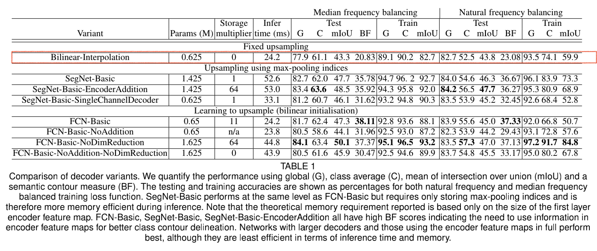
（2）
SegNet-Basic
- 只存储 max-pooling indices，使用更少的 memory。
- 每个 decoder layer 有 64 个特征图，前向传播会慢一些。
FCN-Basic
- 存储所有的 encoder 特征图，多消耗了 11 倍的 memory。
- 使用了 dimensionality reduction，降维 11（CamVid 数据集有 11 类），传播快。
SegNet-Basic 的 decoder 要大于 FCN-Basic，总体上看 SegNet 的网络更大，Traning accuracy 更高。
但是由于 FCN 存储了 encoder 的所有特征图，因此分割边界（BF）更精确。
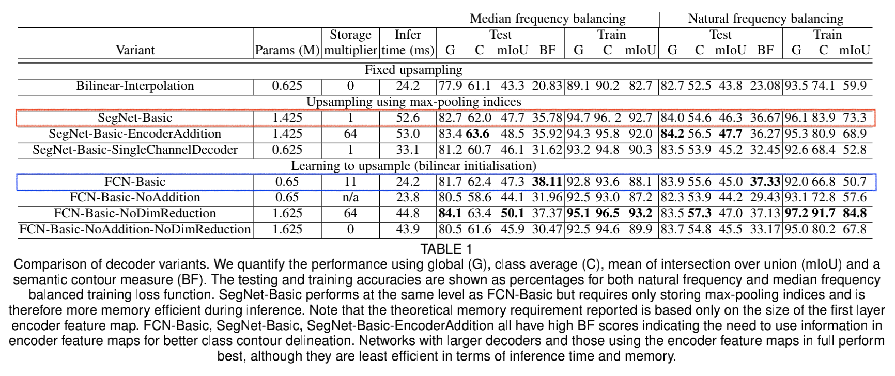
（3）SegNet-Basic 和 FCN-Basic-NoAddition
SegNet-Basic 和 FCN-Basic-NoAddition-NoDimReduction
得出结论：捕捉 encoder 特征图中存在的信息对于提高性能至关重要。
（4）更大的模型，FCN-Basic-NoDimReduction 和 SegNet-EncoderAddition，都能有更好的精度。
（5）FCN-Basic-NoDimReduction 的表现是最好的，这再次强调了分割架构中内存和精度之间的权衡。
Natural frequency balancing 表示没有使用 class balancing。
这个值得去深入了解。
结论总结：
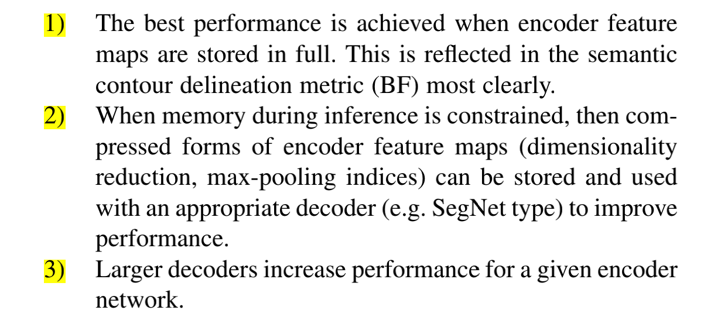
4 Benchmark
DeepLab-LargeFOV is most efficient model，配合 CRF （条件随机场）后处理可以产生有竞争力的结果。
FCN 表示使用固定的双线性上采样方法（fixed bilinear upsampling），没有可学习的参数。
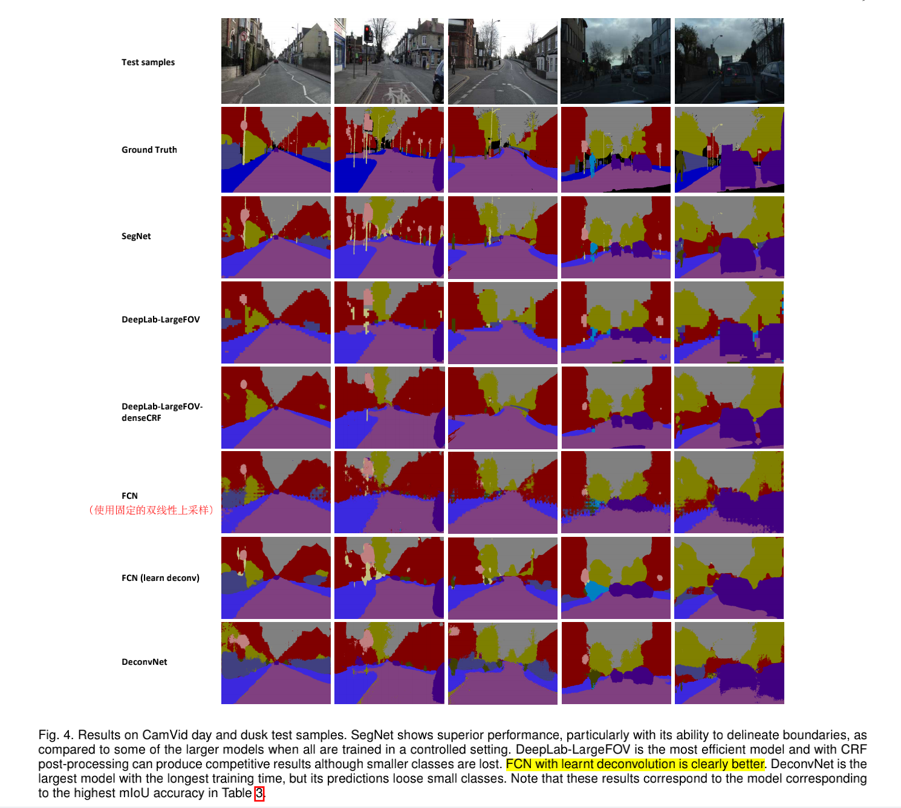
TABLE 2 为 SegNet 和传统方法的比较。
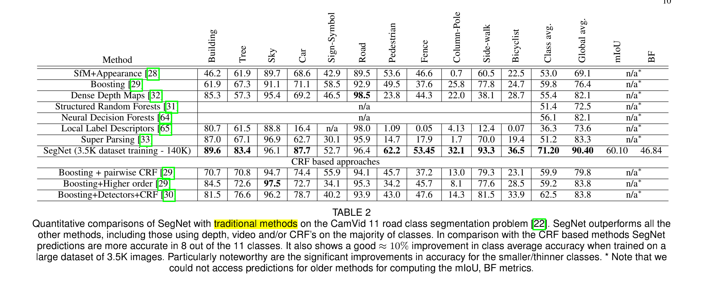
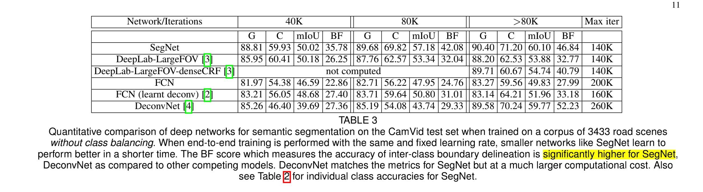
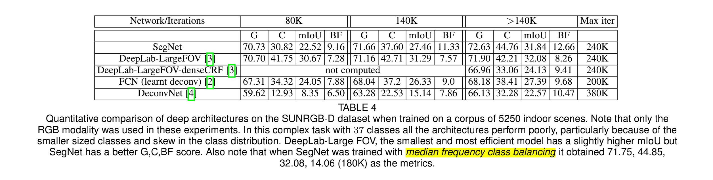
TABLE 4 的 BF 指标为什么那么差？
✅ 整体性能较差的原因之一是在这个分割任务中，类的数量很多，其中很多类占据了图像的一小部分，而且出现频率不高。
性能差的另一个原因可能在于这些深度架构（都是基于 VGG 架构）对室内场景的大变化无能为力。
TABLE 5：类别越大，精度会更好一些。
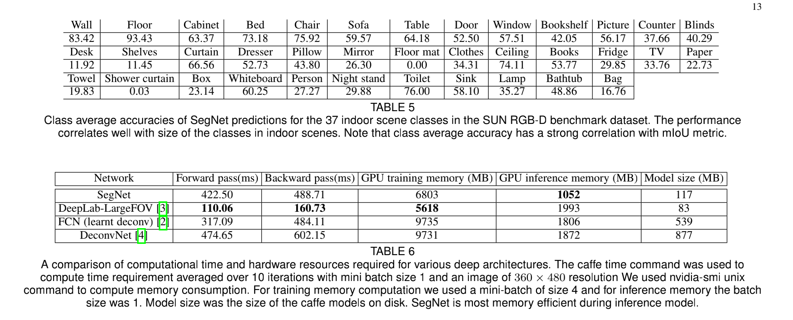
5 Discussion and Feature Work
从移动的汽车上捕捉到的户外场景图像更容易分割，深度架构表现稳健。indoor scene Segmentation 任务更具有挑战性。